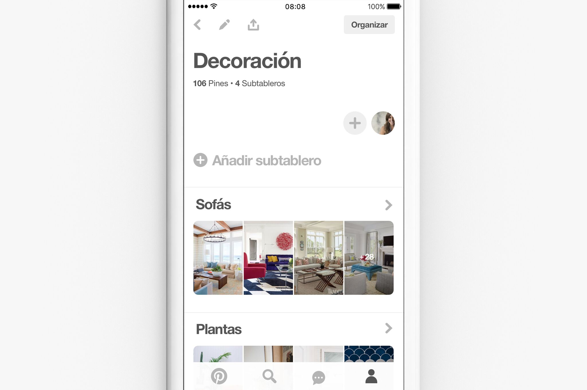
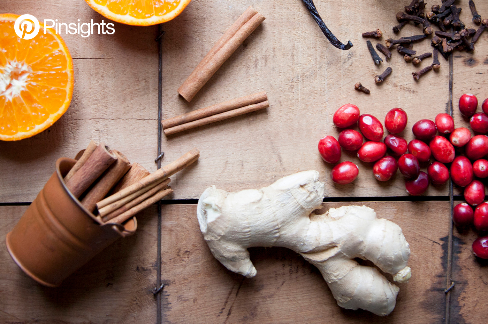
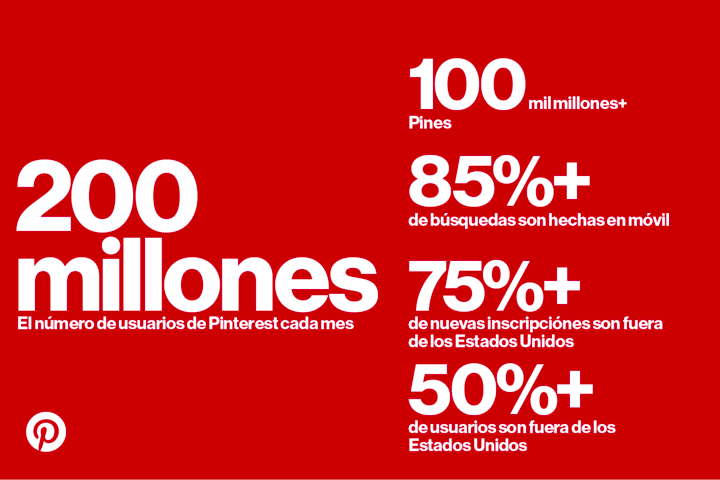
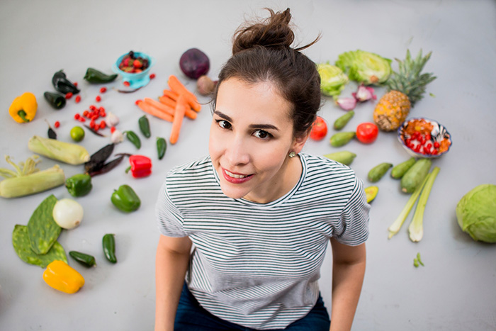
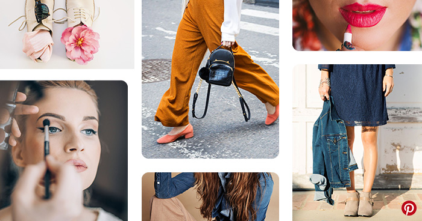

Hemos decidido adoptar los hashtags para que los usuarios estén al tanto de todos los temas que les interesan sin ningún esfuerzo.
En Pinterest, cuantas más ideas encuentres y guardes en tus tableros, más oportunidades tendrás de probarlas en la vida real. En caso de que guardes cientos de ideas en un mismo tablero puede resultar difícil encontrar algo en particular.
Por eso es que estamos a punto de lanzar los subtableros, una innovadora forma de organizar tus Pines en Pinterest. Ahora tendrás la posibilidad de guardar tus ideas favoritas en un mismo tablero, organizándolas en subtableros y encontrarlas fácilmente una vez que te sientas listo para probarlas.
Read "Una nueva manera de organizar tus ideas en Pinterest "

Ha llegado la época más maravillosa (y estresante) del año. A partir de este momento y hasta Año Nuevo existirán innumerables oportunidades para celebrar. Las usuarios de Pinterest aman las Fiestas, preparan sus planes con bastante anticipación y guardan más de 750 millones de ideas año a año.
Read "No te pierdas el Pincreíble reporte de tendencias para las Fiestas 2017"

Cuando lanzamos Pinterest en 2010 nos sorprendió ver cuánta gente acudía a la búsqueda de nuevas ideas para implementar en su vida. Ahora comprobamos que la curiosidad y el deseo de descubrir cosas nuevas es universal. Cada año, más y más personas usan Pinterest para explorar sus intereses y gustos de forma personalizada. Personas en diferentes etapas de la vida alrededor del mundo están descubriendo lo que aman, gracias a Pinterest.

Karla Hernández es la cocinera y blogger por detrás del blog Pizca de Sabor. Usa Pinterest desde 2013 y cuando empezó lo hacía de manera más personal. Con el paso del tiempo fue cambiando y adaptó su estrategia en Pinterest para hacerla más profesional. Hoy Pinterest corresponde al 73% del tráfico social de su blog.

En Pinterest consideramos el estilo como algo muy personal.